<<!DOCTYPE html>
<html>
  <head>
    <title>EE568-Selected Topics in Electrical Machines</title>
    <meta http-equiv="Content-Type" content="text/html; charset=UTF-8"/>
    <style type="text/css">
      @import url(http://fonts.googleapis.com/css?family=Yanone+Kaffeesatz);
      @import url(http://fonts.googleapis.com/css?family=Droid+Serif:400,700,400italic);
      @import url(http://fonts.googleapis.com/css?family=Ubuntu+Mono:400,700,400italic);

      body { font-family: 'Droid Serif'; }
      h1, h2, h3 {
        font-family: 'Yanone Kaffeesatz';
        font-weight: normal;
      }
      .remark-code, .remark-inline-code { font-family: 'Ubuntu Mono'; }
    </style>
  </head>
  <body>
    <textarea id="source">

class: center, middle

# EE-568 Selected Topics in Electrical Machines


## Main Flux Paths

## Ozan Keysan

[keysan.me](http://keysan.me)

Office: C-113 <span class="meta">&#8226;</span> Tel: 210 7586

---
# Main Flux Paths & Machine Parameters
--

## Some definitions:
--


- ## Carter's Coefficient

- ## Effective Core length

---

# Carter's Coefficient
--

## Way to estimate the flux density by converting slotted rotor/stator to a perfect cylinder.

### Ref: Section 3.1.1 of the textbook (Pyrhonen)


---

# Carter's Coefficient


---

# Carter's Coefficient
--

- ### First assume the rotor is smooth to find \\(k\_{cs}\\):

### \\( \delta\_e = k\_{cs} \delta \\)

--
- ### Then assume the stator is smooth to find \\(k\_{cr}\\):


--

- ### Total Carter coefficient is the product of two 
### \\( k\_{c} = k\_{cs} \times k\_{cr} \\):

### Effective airgap is slightly larger than the actual gap (\\(k_c \gtrapprox 1 \\) )

---
# Carter's Coefficient

## \\(k\_c = \dfrac{\tau\_u}{\tau\_u - K b\_1}\\)

## where:

## \\(K = \dfrac{b\_1 / \delta }{5 + b\_1 / \delta }\\)

---
## Example (3.1)


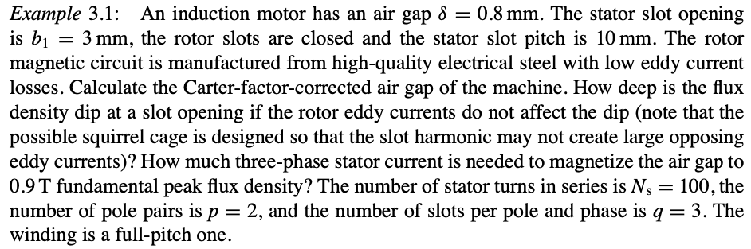

---
### Variations in flux density creates harmonics (and losses)

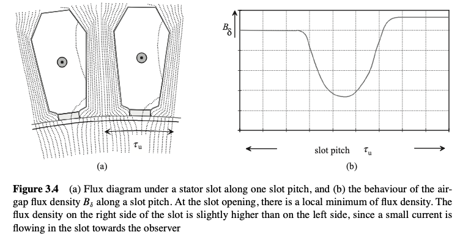

---

### These losses can be minimized by using magnetic wedge or special tooth shape

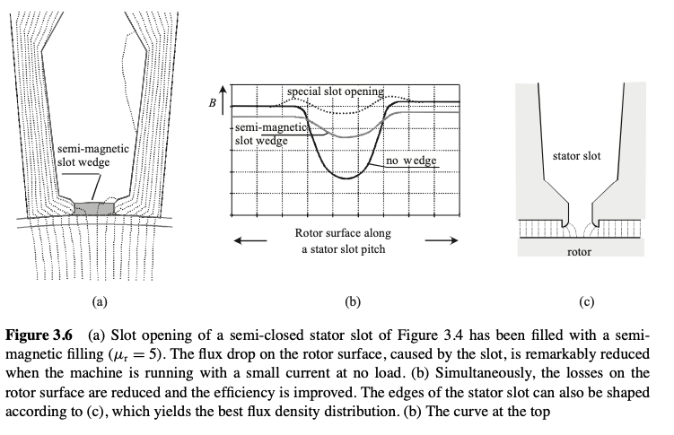

---
# Equivalent Core Length


### \\(l' \approx l + 2 \delta \\)

#### Section 3.2 of the textbook (Pyrhonen)


---
## Equivalent Core Length with Cooling
--

### Larger machines requires ducts for cooling
--


---


### Use the Carter's coefficient to calculate effective length


### \\(l' \approx l - n\_{v} b\_{ve} + 2 \delta \\)
###  \\(b_{ve} \\) can be calculated Carter's coefficient again
### or just assume \\(b_{ve} \lessapprox b_v \\)
---

### Cooling ducts both at the stator and rotor

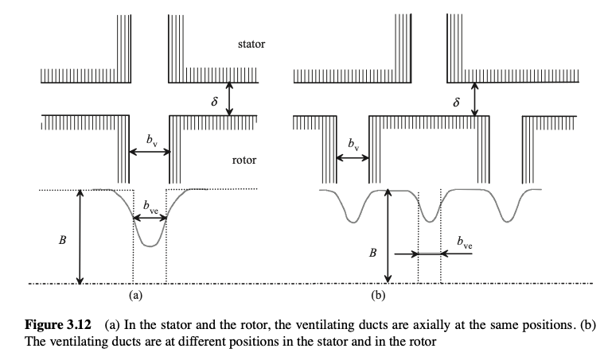
---
### Example

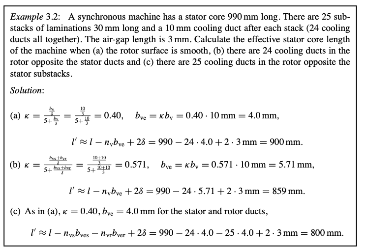

---
# Back Core Flux
---
# D-Q Axis


---
# D-Q Axis


---

# D-Q Axis

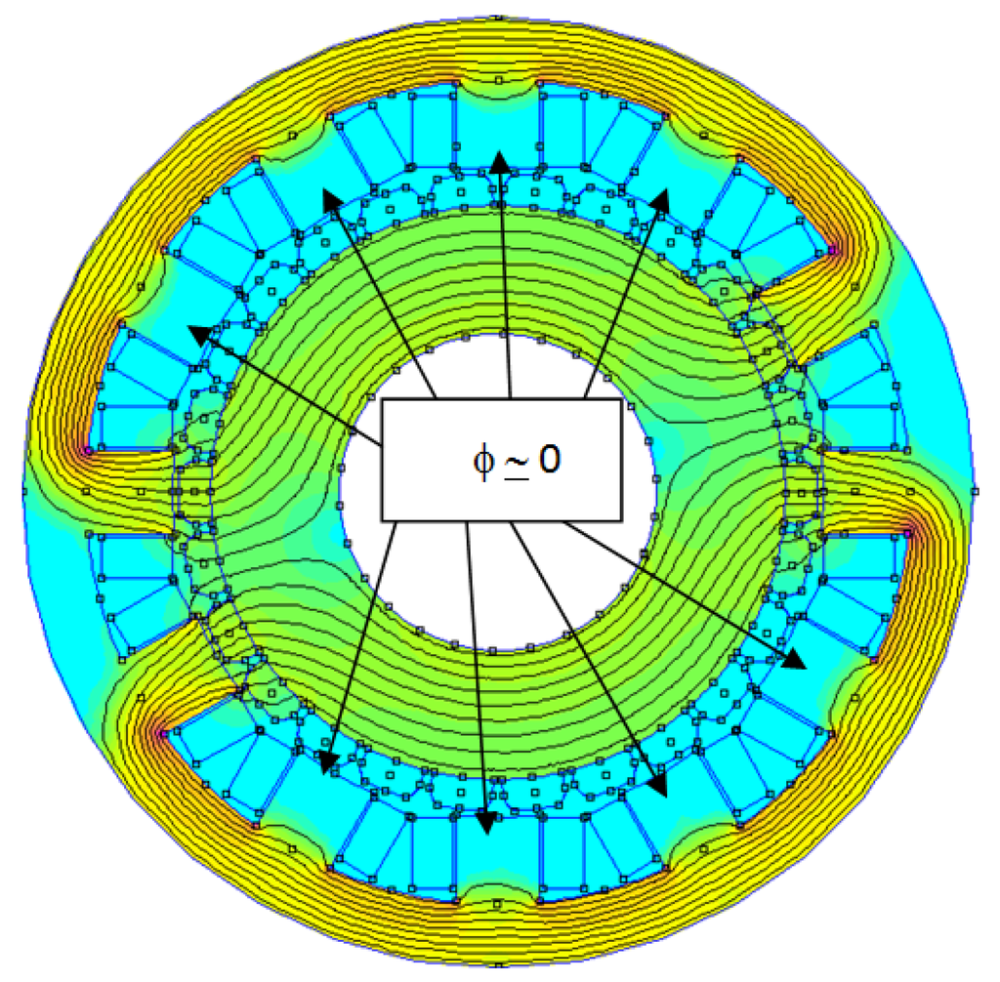
---


# Back Core Flux

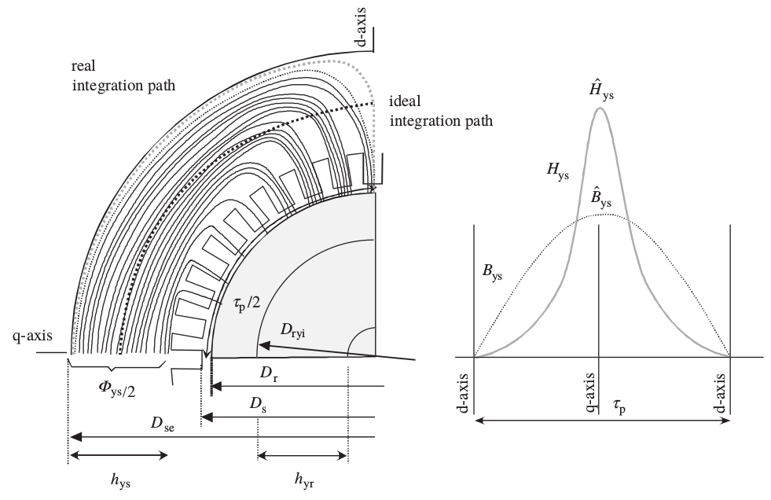

### \\(\hat{B}\_{back-core} = \dfrac{\hat{\Phi}\_{pole}}{2 A\_{back-core}} = \dfrac{\hat{\Phi}\_{pole}}{2  k\_{stacking} l' h\_{ys}}\\)

---

# Magnetizing Inductance

--

## What is inductance?
---
# Magnetizing Inductance

### If B is sinusoidal

## \\(\hat{\Phi}\_{pole} = \int B dS\\)
--
\\(=\dfrac{2}{\pi}\hat{B}\tau\_{pole}l'\\)

--

### Flux Linkage

### \\( \lambda = N \Phi  = k\_{w1} N\_s  \hat{\Phi}\_{pole} \\)
--
\\(= k\_{w1} N\_s \dfrac{2}{\pi}\hat{B}\tau\_{pole}l' \\)

---
# Magnetizing Inductance
--

### \\(\hat{H}\_m \delta\_e = MMF = \dfrac{\hat{B}}{\mu_0} \delta\_e \\)
--

### \\(MMF = \dfrac{4}{\pi} \dfrac{k\_{w1} N\_s}{2p} \sqrt{2} I\_{s,rms}\\)

--

### \\( \hat{B} = \dfrac{4}{\pi} \dfrac{k\_{w1} N\_s}{2p} \sqrt{2} I\_{s,rms} \dfrac{\mu_0}{\delta\_e}\\)

---
# Magnetizing Inductance

### \\(\lambda = \dfrac{2}{\pi} \dfrac{\mu\_0}{\delta\_e}  \dfrac{4}{\pi} \dfrac{(k\_{w1} N\_s)²}{2p} \tau\_{p}l' \sqrt{2} I\_{s,rms}  \\)

--

### \\(L = \dfrac{\lambda}{I}\\)
--

### \\(L\_{m (ph)} = \dfrac{2}{\pi} \mu\_0 \dfrac{1}{2p}\dfrac{4}{\pi} \dfrac{\tau\_p}{\delta\_{ef}} l' (k\_{ws}N\_s)^2\\)

---
# Magnetizing Inductance (Per-phase)
--

### \\(L\_{m (ph)} = \dfrac{2}{\pi} \mu\_0 \dfrac{1}{2p}\dfrac{4}{\pi} \dfrac{\tau\_p}{\delta\_{ef}} l' (k\_{ws}N\_s)^2\\)

### Writing pole pitch in terms of diameter
--

### \\(L\_{m (ph)} = \dfrac{2 \mu\_0 D}{\pi p^2 \delta\_{ef}} l' (k\_{ws}N\_s)^2  \\)

### Derivation in Pyrhonen Section 3.1.2
---

# Total Magnetizing Inductance


### \\(L\_m = \dfrac{3}{2} L\_{m (ph)} \\)
--
\\( = \dfrac{3}{2} \dfrac{2 \mu\_0 D}{\pi p^2 \delta\_{ef}} l' (k\_{ws}N\_s)^2 \\)


---
# Magnetizing Inductance
--

- ## Increases with number of turns
--

- ## Reduces with large airgap
--

- ## Reduces with the number of poles (power factor gets worse with higher number of poles)
---

# Magnetizing Inductance
--

- ## Reduces with increasing voltage:
--
 Saturation

--
- ## Reduces with torque: Why?

---
# Flux Lines vs Torque


---
# Magnetizing Inductance vs Torque


---

# Leakage Flux (Ch4)
--

## Flux that does not cross the airgap
--

## Flux crosses the airgap but does not link the winding

---
# Leakage Flux

## Flux that does not cross the airgap
--

- ### Pole Leakage Flux
--

- ### Slot Leakage Flux
--

- ### Tooth Tip Leakage Flux
--

- ### End Winding (Overhang) Leakage Flux

---
# Pole Leakage Flux

### In salient pole machines (i.e. synchronous machine)

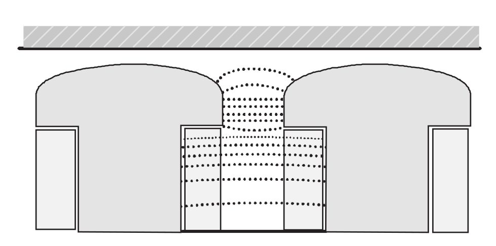

---
# Pole Leakage Flux

### In PM machines (between adjacent magnets)

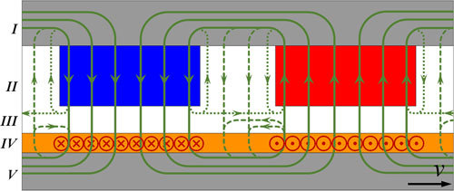

---
# Pole Leakage Flux

### In PM machines (between magnet and rotor core)

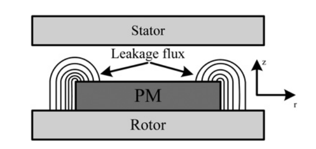


---
# Slot Leakage Flux & Tooth Tip Leakage Flux


---
# Slot Leakage Inductance
--

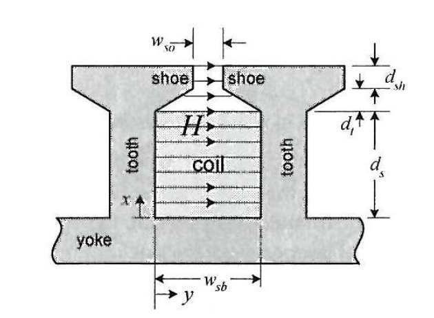

### H increases as you go higher in the slot, as there is more coils are enclosed in \\(\int H dl \\)

---
# Slot Leakage Inductance
--

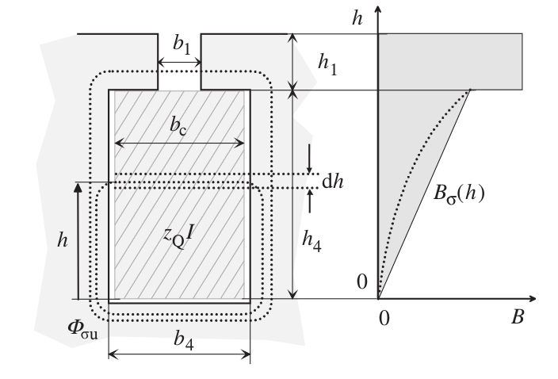
---


# Slot Leakage Inductance
--

### for the bottom part (\\(L\_{u1}\\))

### \\(B(h) = \mu\_0 H (h) = \mu\_0 \dfrac{z\_Q I \dfrac{h}{h\_4}}{b\_4} \\)
--

### \\(L\_{u1} = \dfrac{l' b\_4}{\mu\_0 I^2} \int_0^{h\_4} B^2(h) dh\\)

---

# Slot Leakage Inductance
--

### repeat for the upper part (\\(L\_{u2}\\))

### \\(B(h) = \mu\_0 \dfrac{z\_Q I}{b\_1} \\)   (Constant B)
---

# Slot Leakage Inductance
--

### Inductance for one slot:
### \\(W\_u = 1/2 L\_{u1} I^2 = 1/2 \mu_0 l' z\_Q^2 I^2 (\lambda_1 + \lambda_4)\\)

---

# Total Slot Leakage Inductance
--

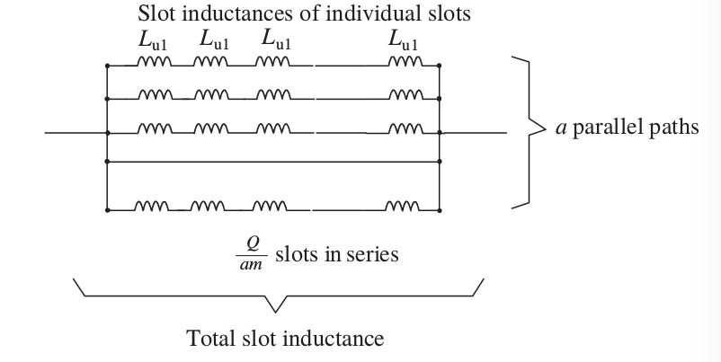

---

# Total Slot Leakage Inductance
--

### \\(L\_u = \dfrac{Q}{am}\dfrac{1}{a} L\_{u1}\\)
--

### \\(L\_u = \mu\_0 l' \dfrac{Q}{m} (\dfrac{z\_Q}{a})^2 \lambda\_{u}\\)
--

### \\(N= \dfrac{Q}{2am} z\_Q\\)
--

### \\(L\_u = \mu\_0 l' \dfrac{4m}{Q} N^2 \lambda\_{u}\\)

---
# End Winding Leakage Flux

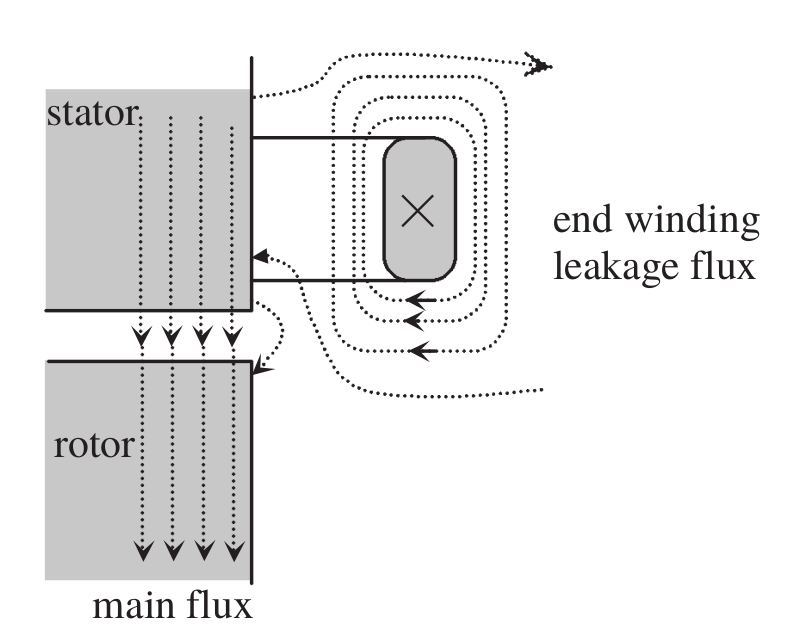
---
# End Winding Leakage Flux

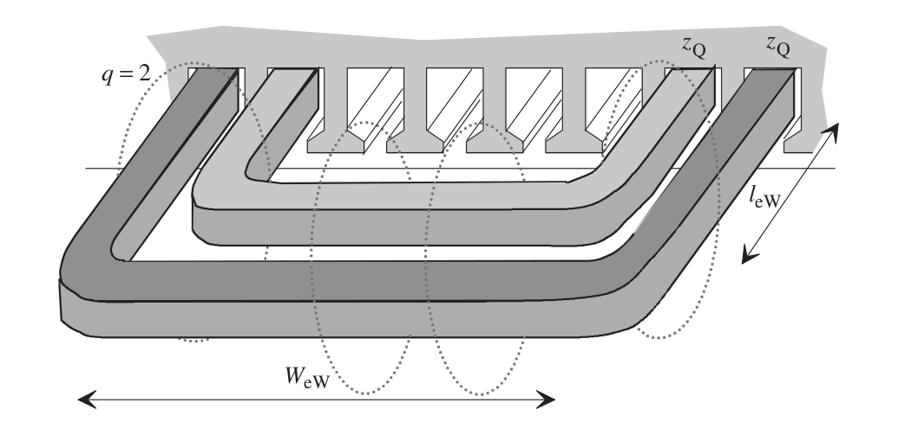


---
# Slot Shapes

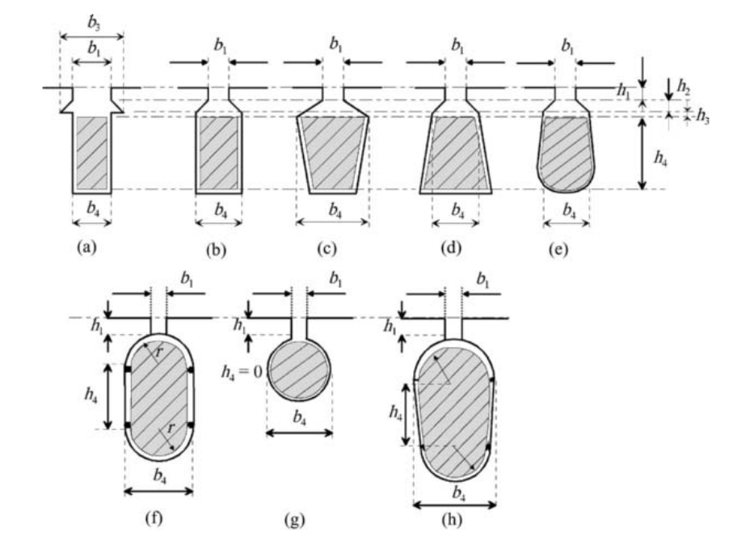


---
# Tooth Tip Leakage Flux
--

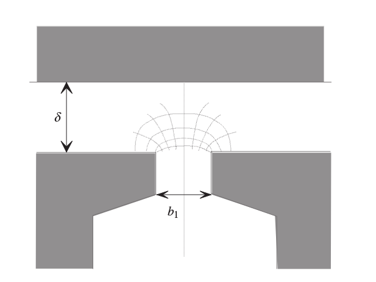
---

## You can download this presentation from: [keysan.me/ee564](http://keysan.me/ee564)

    </textarea>
    <script src="http://gnab.github.io/remark/downloads/remark-latest.min.js" type="text/javascript"></script>
    <script src="https://cdnjs.cloudflare.com/ajax/libs/mathjax/2.7.1/MathJax.js?config=TeX-AMS_HTML&delayStartupUntil=configured" type="text/javascript"></script>
    <script type="text/javascript">
      var slideshow = remark.create({countIncrementalSlides: false});

      // Setup MathJax
      MathJax.Hub.Config({
          tex2jax: {
          skipTags: ['script', 'noscript', 'style', 'textarea', 'pre']
          }
      });
      MathJax.Hub.Queue(function() {
          $(MathJax.Hub.getAllJax()).map(function(index, elem) {
              return(elem.SourceElement());
          }).parent().addClass('has-jax');
      });

      MathJax.Hub.Configured();
    </script>
  </body>
</html>
